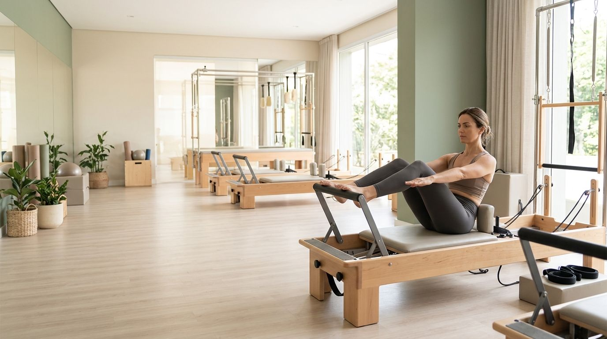

Não aparecer quando procuram
Site e Google Meu Negócio configurados juntos fazem você aparecer nas buscas da região.
Outro negócio
Escola, academia, estúdio, imobiliária, igreja ou profissional autônomo: todo negócio precisa ser encontrado no Google e ter um jeito fácil de ser chamado. Montamos o site em volta do que o seu ramo precisa.

Modelo Studio Vértice →Site e Google Meu Negócio configurados juntos fazem você aparecer nas buscas da região.
Horários, preços, endereço e contato num lugar só, sempre atualizados.
Botão de WhatsApp em todas as páginas, com a mensagem já escrita.
Fazemos. Os ramos da página principal são só os mais comuns; o site é montado em volta do seu negócio.
Áreas com login e sistemas sob medida têm orçamento à parte. Veja os sistemas que já construímos na página principal.
Faça o raio-X grátis e veja a nota dele em velocidade, Google e segurança, com o que vale consertar.